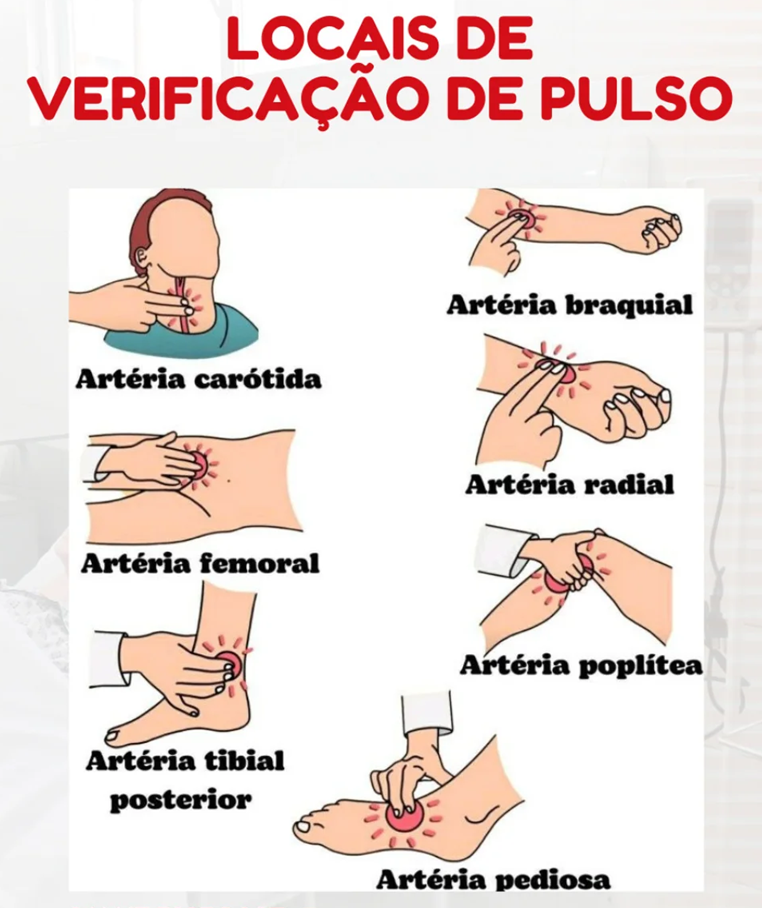

Você precisará de um relógio com um ponteiro de segundos ou de um cronómetro digital.
Em um local calmo, afastado de distrações, sente-se, aguarde pelo menos 10 minutos (para garantir que obtém uma pulsação em repouso).
Conte a pulsação colocando suavemente dois dedos no interior do seu outro pulso, abaixo do polegar.
 Vamos verificar os batimentosAo contar os batimentos não use o polegar, porque poderá sentir a pulsação do mesmo. Para obter a pulsação em repouso, conte os batimentos e multiplique Conte os batimentos durante 30 segundos. Em seguida, duplique o resultado para obter a pulsação de um minuto. ou Conte os batimentos durante 10 segundos. Em seguida, multiplique por seis para obter a pulsação de um minuto.